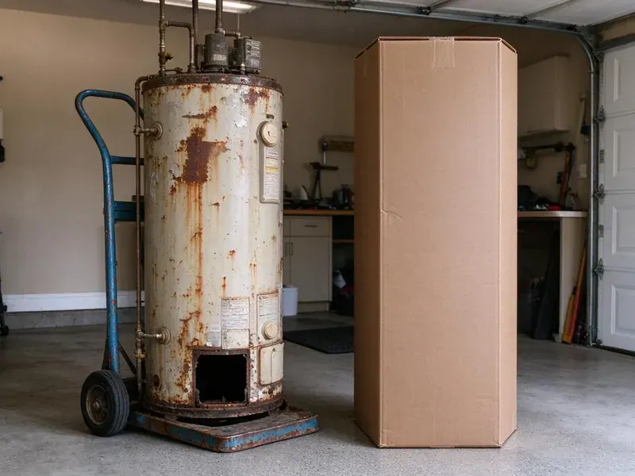

Pipe Replacement in Woonsocket, RI
Third pinhole leak this year? The copper is likely thin throughout. JPN Plumbing repipes homes in Woonsocket, RI.
- Nearby Crews
- Flexible Scheduling
- Small, Planned Wall Openings
- PEX-A and Copper Options

Clean Water and Full Pressure in Woonsocket, RI.
Most whole-home repipes are done in under a week.
Long-Lasting Repipes for Woonsocket, RI Homes
JPN Plumbing handles repipes across Rhode Island for houses, condos and small commercial buildings. Every fixture gets new pipe in a full repipe. We plan routes through attics, crawlspaces and interior walls, keeping drywall openings small and placing them where they are easiest to patch. Clean work.
Some of what we do:
- Slab leak bypasses
- Pinhole-leak copper repiping
- Polybutylene removal

Additional Plumbing Replacement Services in Woonsocket, RI
When repairs are no longer enough, our replacement services in Woonsocket, RI deliver durable upgrades that restore full performance.


Customers
Why Choose JPN Plumbing for Pipe Replacement in Woonsocket, RI?
Planning cuts the mess. We map the routes before cutting drywall. Running lines through the attic or crawlspace when possible means fewer openings, and the ones we do make are placed where patching is easy and hidden where we can. Less patching.
- Skilled Crews, Our plumbers repipe homes regularly and know how to route lines with minimal cuts.
- Proven Materials, Uponor, Viega and Mueller parts in most installs.
- Good Materials, PEX-a and Type L copper from established brands, rated for drinking water.
Citywide Coverage
We replace pipe in homes all over Woonsocket, from older neighborhoods with galvanized lines to newer houses with early PEX problems. The approach changes with the home. Most inspections happen this week.
Experienced Team
Our plumbers repipe homes regularly. Experience means fewer openings. That shows up in the details, like smart routing and proper strapping. Small things matter.
Safety-First Approach
Every pipe replacement in Woonsocket gets the permit it needs. The inspector signs off first. If something needs changing, we fix it while the walls are still open, and you get a copy of the signed inspection.
Trusted Certified Woonsocket Plumbing Services Professionals
At JPN Plumbing, we take pride in licensed, certified plumbing services throughout Woonsocket, RI. Those papers on the wall mean something. Our plumbers hold recognized industry credentials, and they follow strict safety and quality rules on every repair, installation and maintenance call we run.
Call Us Now PHCC Plumbing Contractor Recognition
PHCC Plumbing Contractor Recognition Better Business Bureau (BBB) Accreditation
Better Business Bureau (BBB) Accreditation Angi Certified Pro
Angi Certified Pro ISO 9001 Quality Management Certification
ISO 9001 Quality Management CertificationWhat Goes Into a Repipe in Woonsocket, RI
Galvanized Pipe Replacement in Woonsocket, RI
Galvanized steel was common before the 1960s. The zinc wears off and the steel rusts inside. Over decades the opening shrinks, pressure drops and the water turns brown after sitting, and the threads where pipes join are often the first to leak. Replacing it is the only fix.

Polybutylene Pipe Replacement in Woonsocket
Polybutylene is gray or blue plastic installed from roughly the late 1970s to mid 1990s. Chlorine breaks it down over time. Failures tend to be sudden splits at fittings rather than slow drips, and some insurers refuse to cover homes that still have it. Replace it.
Copper Pipe Replacement in Woonsocket, RI
Copper still has fans. It handles heat well and lasts decades. We install Type L copper for most interior supply lines, sweat or press the joints, and support every run with hangers at the spacing code requires, so the new pipe does not rattle or sag. Costs more than PEX.
Slab Leak Pipe Repair and Replacement in Woonsocket
Water under a slab shows up as a warm spot on the floor, a sound of running water, or a meter that spins with everything off. Finding the exact spot comes first. Then you have a choice between breaking the slab to fix that spot or rerouting the line through walls or the attic, and rerouting often costs less and avoids future slab leaks on that line. We explain both.
PEX Pipe Installation in Woonsocket
PEX costs less than copper and goes in faster. Scale and rust do not affect it. Private wells serve many rural homes, and owners around Woonsocket benefit from testing for acidity, iron and other common concerns. We use PEX-a with expansion fittings or PEX-b with crimp rings depending on the job, choosing a layout that fits the house. Fewer joints, fewer leaks.
Drain Pipe Replacement in Woonsocket, RI
Drain lines fail too. Cast iron cracks and scales. We replace cracked cast iron, failing ABS or old galvanized drains with PVC, checking slope and venting so the new drains flow freely. Camera first.
Whole-Home Repiping in Woonsocket
Repiping sounds bigger than it is. You can usually stay in the house. We work room by room, restore water most evenings, and keep dust down with plastic sheeting and drop cloths, then patch every opening before we leave. Clean finish.

Slab Leak Pipe Replacement in Woonsocket
Rerouting is often better than digging. Jackhammering floors is a last resort. We run new pipe through the attic or walls to bypass the leaking line under the concrete, which leaves the floors alone and prevents the same line from failing again. Fast too.
Pipe Replacement Near Me in Woonsocket, RI
Local repiping matters because homes in an area were often built with the same materials. Whole neighborhoods share pipe types. We know which homes around Woonsocket tend to have galvanized, poly or thin copper, so we come prepared. Saves time.
Need pipe replacement near you? Let us know where the leaks, rust or low pressure show up. That points us to the likely problem, and an inspection in Woonsocket usually takes under an hour, which keeps the process simple. No pressure.
JPN Plumbing at a Glance
- Licensed and insured plumbers serving Woonsocket, RI
- 24/7 emergency service with same-day scheduling
- Upfront, flat-rate pricing before work begins
- 4.8-star rated by 684+ Rhode Island customers
Woonsocket Map
Woonsocket Information
- Population
- 43,135
- Area codes
- Local
- Service area
- Woonsocket and towns within a 40 mile drive
- Nearby
- Cumberland Hill, Valley Falls, Greenville, Central Falls
Galvanized pipe rusts shut from the inside, and polybutylene can split without warning, which is why so many older homes need repiping.
Expert Services
Reach out to JPN Plumbing for reliable plumbing work done by licensed pros in Woonsocket, RI.
Our Specialized Plumbing Services in Woonsocket, RI
At JPN Plumbing, you get every kind of plumbing service from one company across Woonsocket, RI. We go from leak detection all the way to full system installations, for homes and commercial buildings, and we do it quickly at a fair price. Here are the core services we offer:


How We Repipe a Home in Woonsocket, RI
Most decisions happen before cutting.
Free Estimate
Call (401) 364-2507 to schedule an inspection. You get a quote after we inspect.
Choose Materials
PEX or copper, we help you choose. Budget and layout matter.
Repipe and Patch
We install new lines, test the system and finish the drywall.
Frequently Asked Questions About Pipe Replacement in Woonsocket
A small section replacement might cost $500 to $2,500. Full repipes often run $4,000 to $15,000 or more. The price depends on the extent of the damage, the type of pipe being replaced, the new material you choose, and how many walls need opening. We price after inspecting.
In most cities, yes. We pull the permit.
Yes. We know it is a major cost. We offer financing options that spread the cost over time, and we can walk you through the available plans during the estimate. Ask for details.
Supply lines get PEX-a or copper, drains get PVC. All of it meets code.
For supply lines we stick with Uponor and Viega on the PEX side and Mueller or Cerro for copper tube and fittings. Matching fittings matter. Everything carries NSF approval.
Possibly, for small repairs. Big jobs need a licensed plumber.
It depends on the pipe condition. One bad spot means a repair. Leaks in several rooms, rust throughout, or pipe that crumbles when cut tells us the whole system is failing and patching just delays the inevitable. We show you.
As little as possible. Overhead routes come first. Openings are usually about the size of a sheet of paper or smaller, placed where patching is easy and often hidden in closets. Ready for paint.
Hear From Customers Who Hired Our Plumbing Experts

Brian W.
I smelled gas behind the dryer and called right away. The plumber found a corroded flex connector, replaced it, and pressure tested the whole line before turning the gas back on. He let me watch the gauge hold steady for fifteen minutes.
Gas Line Repair · Woonsocket, RI
Emily R.
The shutoff valve under our kitchen sink snapped off in my hand on a Sunday morning. JPN Plumbing had someone out by early afternoon. He replaced both angle stops with quarter turn valves and showed me where our main shutoff was, which I honestly did not know.
Plumbing Repair · Pawtucket, RI
Jessica T.
We were adding a gas range in a kitchen remodel and needed a new line run from the meter. The plumber pulled the permit, ran the pipe through the crawl space, and had it inspected and approved within the week.
Gas Line Repair · Providence, RI
Tyler J.
We bought a taller comfort height toilet for my dad, who just had knee surgery. The plumber pulled the old one, found the flange was cracked, and replaced it before setting the new bowl. Took about two hours.
Toilet Installation · Providence, RI
Patricia H.
We had a slab leak that two other companies could not find. JPN Plumbing located it in under an hour with a listening device. They rerouted the line through the attic instead of breaking up the floor, so we kept our kitchen tile.
Slab Leak Repair · Providence, RILaura S.
Our 40 gallon tank started leaking from the bottom after thirteen years. The tech hauled the old one out, set a new unit with a fresh expansion tank, and had hot water running in about four hours. He took the old tank with him too.
Water Heater Replacement · Providence, RI